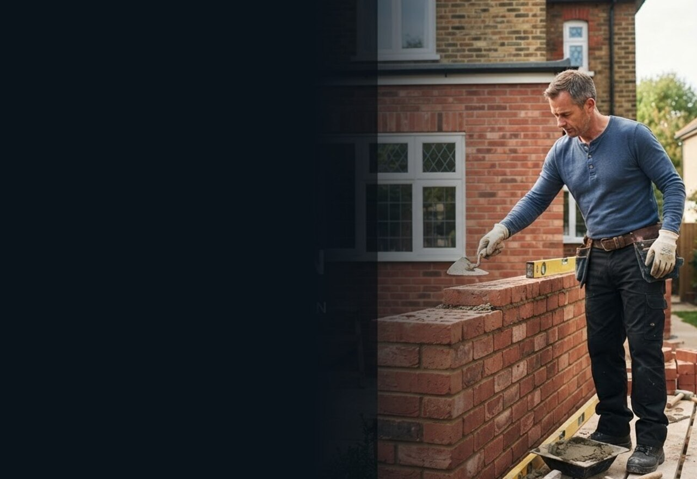

01 · REPAIRS
Plumbing repairs and alterations
Leaks, worn fittings and changes to household pipework can begin with a clear description of the problem and where it appears. Share photographs where useful, note when the issue occurs, and explain any recent changes. Alto Barren can then confirm whether the enquiry fits its current workload and discuss the appropriate next step. The imagery here is illustrative and is not represented as a completed Alto Barren project.